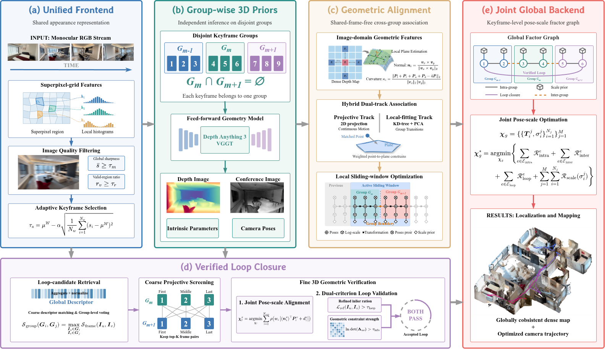

Dense monocular SLAM over long trajectories remains challenged by redundant computation and cumulative pose-scale drift. Although recent feed-forward 3D foundation models provide strong geometric priors, many reconstruction-driven systems rely on shared anchor frames or overlapping submaps to connect local reconstructions — increasing overhead and limiting keyframe scheduling flexibility.
We propose DeCo-SLAM, which decouples local reconstruction from inter-group geometric connectivity. A unified superpixel-guided frontend handles adaptive keyframe selection and loop-candidate retrieval; selected keyframes are partitioned into disjoint groups and reconstructed independently. Feed-forward predictions are converted into explicit inter-group constraints to align these reconstructions without shared anchor frames. Loop candidates pass two-stage geometric verification, and a compact keyframe-level factor graph jointly optimizes camera poses and logarithmic scale factors.
Pipeline overview
DeCo-SLAM decouples local reconstruction from inter-group geometric connectivity. The pipeline combines keyframe selection and loop retrieval in a unified frontend, independent reconstruction of disjoint groups, and global pose–scale optimization with explicit geometric constraints. Expand the cards below to see each stage's equations and design details.

Figure 2. (a) Uncalibrated monocular video input. (b) A unified superpixel frontend performs image-quality filtering, adaptive keyframe selection, and group-level loop-candidate retrieval. (c) Selected keyframes are partitioned into disjoint groups, where a feed-forward geometry model independently predicts depth, confidence, intrinsics, and poses. (d) Hybrid dual-track point-to-plane associations turn inter-group predictions into explicit geometric constraints. (e) A keyframe-level factor graph jointly optimizes camera poses and log-scale factors, producing a globally consistent trajectory and dense map.
The input is monocular video captured by a handheld or aerial camera, with no camera intrinsics and possible lens distortion, motion blur, and abrupt viewpoint changes. Running a feed-forward 3D model directly on a long sequence accumulates pose and scale errors, causing trajectory drift and structural breaks in later frames.
DeCo-SLAM therefore assumes no camera parameters or external pose priors; all geometry is predicted from the images.
Sharing one appearance representation is central to the design: keyframe selection measures change from the latest keyframe, while loop retrieval compares the current observation with historical frames. Both use the same superpixel histograms, avoiding two separate feature sets.
After quality filtering, a frame is selected as a new keyframe when its similarity to the latest keyframe falls below τa. The threshold adapts to recent similarity statistics, avoiding the limitations of a fixed threshold across different motions and scenes.
Adjacent groups share no keyframes. Groups share scene regions, rather than frames; these co-visible regions provide geometric correspondences for recovering relative pose and scale.
This design avoids redundant inference on shared anchor frames: each keyframe is processed by the feed-forward model only once.
Two complementary association paths are used: projective association handles within-group constraints by extracting plane parameters from image neighborhoods; local-fit association handles inter-group boundaries by fitting target planes from neighboring point clouds with a KD-tree and PCA, since projective association becomes unreliable when groups have inconsistent pose and scale.
ni = (vx × vy) / ‖vx × vy‖₂ , di = −ni⊤Pi (9)
Loop candidates undergo two-stage geometric verification. Coarse screening ranks them by projective overlap; fine alignment jointly optimizes relative pose and scale with weighted point-to-plane residuals. The inlier ratio and information-matrix determinant determine acceptance. Verified edges enter the global factor graph.
After optimization, each local point is transformed into global coordinates using the optimized rotation, translation, and scale, yielding a consistent trajectory and dense map.
Reconstruction
Selected results
| Method | KITTI rot ↓ | KITTI trans ↓ | ICL Acc ↓ | ICL Comp ↓ |
|---|---|---|---|---|
| SLAM3R | 0.984 | 199.71 | 13.31 | 26.13 |
| VGGT-Long | 0.128 | 34.75 | 9.93 | 12.63 |
| MASt3R-SLAM | — | — | 9.00 | 9.97 |
| Ours (DA3) | 0.089 | 17.94 | 6.42 | 6.58 |
Average results on KITTI and ICL-NUIM. DeCo-SLAM (DA3) achieves the best scores on all four metrics; MASt3R-SLAM did not complete the full KITTI sequence evaluation.
Conclusion
DeCo-SLAM decouples local reconstruction from inter-group geometric connectivity. Selected keyframes are reconstructed independently in disjoint groups, then aligned in pose and scale through explicit point-to-plane constraints without shared anchor frames. A unified frontend supports both keyframe selection and loop-candidate retrieval, while a keyframe-level factor graph jointly optimizes camera poses and log-scale factors.
Experiments on TUM RGB-D, KITTI, and ICL-NUIM show improvements in trajectory accuracy and dense reconstruction quality. The framework works with both DA3 and VGGT, demonstrating compatibility with different feed-forward geometry models.
Future work will explore motion-aware geometric association in dynamic scenes and more efficient geometry inference and global optimization to reduce compute and memory costs.